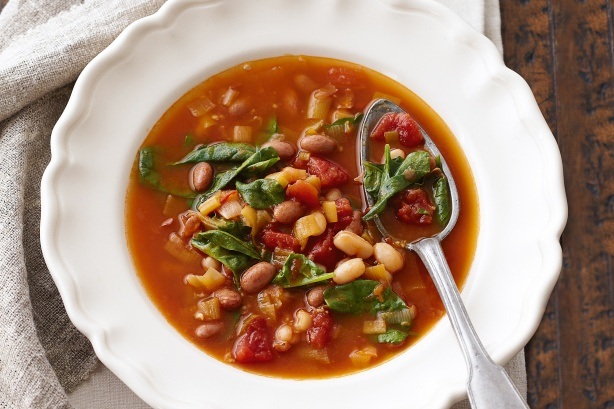

Hungarian bean soup

The most delicious hungarian food!
Good with pálinka.
With chili is better.
What you need to make it:
For ham
- 1kg smoked ham hock
- 1 bigger red onion
- 2 slices of garlic
- 3 pieces of bay leaf
- 10 pieces of black pepper
For soup
- Oil
- 1 Red onion
- 4 slices of garlic
- 1 spoon of red paprika
- 300g bean
- Salt
- Pepper
- 4 pieces of bay leaf
- 2 pieces of yellow carrot
- 1 pieces of white carrot
- 150g dry sausage
- 1dl sour cream
- 1 spoon flour
For pinched noodles
- 100g flour
- 1 egg
- Salt
For decoration
- 1 bunch of parsley
Steps
- To prepare hungarian bean soup, soak the beans in cold water the night before, and cook the smoked pork knuckle a day in advance as well. The smoked knuckle should be placed in cold water to start cooking. You can season the cooking water with onion, a few cloves of garlic, bay leaves, and whole peppercorns. The cooking time is at least 2½ hours. In the final step, let the cooked knuckle cool in its broth, then remove it, debone it, and cut it into pieces.
- Heat oil in a large pot, add the peeled and finely chopped onion, and sauté until translucent. Stir in the cleaned, crushed garlic and the paprika, then pour in about 100 ml of water. Simmer over medium heat until the liquid evaporates and the mixture cooks down to its fat.
- Add the soaked pinto beans along with their soaking liquid, and pour in about 2 liters of the smoked pork knuckle’s cooking broth. Season with salt and pepper, and toss in the bay leaves. Once the beans are halfway cooked, add the cleaned and chopped vegetables to taste, along with some celery greens. Replenish the evaporated liquid continuously with water as needed.
- Once the beans are fully tender, slice the peeled sausage into rounds, sear them in a dry pan until browned, and add them to the soup—without the rendered fat.
- Mix the sour cream with the flour and a ladleful of soup until smooth and lump-free, then stir it into the soup.
- Prepare the csipetke by kneading together flour, egg, and a pinch of salt. Tear off small pieces of the dough and drop them into the boiling bean soup. Let the soup simmer with the csipetke (pinched noodles) for another 2–3 minutes.
- For serving, place some of the shredded pork knuckle meat into a bowl and ladle the soup over it. You can sprinkle the finished hungarian bean soup with fresh parsley for extra flavor and a touch of color.
Home